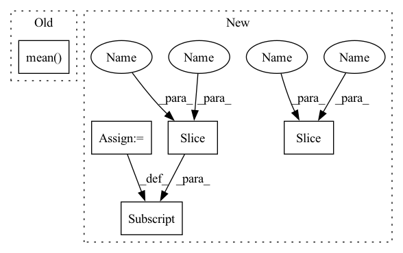

Pattern ID :13854
Before Change
features_tmp[:, ind1] = xs1[j]
x0[i, j] = xs0[i]
x1[i, j] = xs1[j]
pd_vals[i, j] = self.model(features_tmp).mean()
return x0, x1, pd_vals
def plot_1d(After Change
x0[i, j] = xs0[i]
x1[i, j] = xs1[j]
features_all[st:en] = features_tmp
st = en
en += len(data)
predictions = self.model(features_all)
pd_vals = np.zeros((self.num_points, self.num_points))
st, en = 0, len(data)
for i in range(self.num_points):
for j in range(self.num_points):
pd_vals[i, j] = predictions[st:en ].mean()
st = en
en += len(data)
In pattern: SUPERPATTERN
Frequency: 3
Non-data size: 5
Instances Fragment ID: 46122989
Project Name: atrcheema/ai4water
Commit Name: 7bb60a2e513f578e0671a557aaee13d28734f461
Time: 2022-04-14
Author: ather_abbas786@yahoo.com
File Name: ai4water/postprocessing/explain/_partial_dependence.py
M Class Name: PartialDependencePlot
N Class Name: PartialDependencePlot
M Method Name: _interaction(4)
N Method Name: _interaction(4)
M Parent Class: ExplainerMixin
N Parent Class: ExplainerMixin
M File Name: ai4water/postprocessing/explain/_partial_dependence.py
N File Name: ai4water/postprocessing/explain/_partial_dependence.py
M Start Line: 307
M End Line: 315
N Start Line: 313
N End Line: 340
Before Change
attention_cache_handle = int(cache_metadata[0, 0].item())
current_sequence_length = int(cache_metadata[0, 1].item())
with self.memory_cache.use_cache(attention_cache_handle) as cache:
print("METADATA:", cache_metadata, "CACHE", cache.mean() , "CACHE ENTRIES:", len(self.memory_cache._allocated_tensors))
cache[...] += 1
return (inputs[0] + cache.flatten()[0],)
After Change
def inference_step(self, cache_metadata: torch.IntTensor, *inputs: torch.Tensor) -> Tuple[torch.Tensor, ...]:
attention_cache_handle = int(cache_metadata[0, 0].item())
prefix_length = int(cache_metadata[0, 1].item())
hidden_states, *_ = inputs
assert hidden_states.ndim == 3, "expected hidden states to be 3-dimensional: [batch_size, seq_len, hid_size]"
with self.memory_cache.use_cache(attention_cache_handle) as cache:
print("METADATA:", cache_metadata)
assert isinstance(self.module, BloomBlock) and cache.shape[0] == 2 and cache.ndim == 5
layer_past = past_k, past_v = cache[0, :, :prefix_length], cache[1, :, :prefix_length]
print(past_k.shape, past_v.shape)
hidden_states, (new_k, new_v) = self.module.forward(hidden_states, layer_past=layer_past, use_cache=True)
// todo remove these debugprints
new_length = new_v.shape[1]
assert new_length > prefix_length
assert new_k.shape[0] == past_k.shape[0] and new_v.shape[0] == past_v.shape[0]
assert new_k.shape[1] == new_length and new_v.shape[1] == new_length
assert new_k.shape[2:] == past_k.shape[2:] and new_v.shape[2:] == past_v.shape[2:]
assert torch.allclose(new_v[:, :past_v.shape[1]], past_v)
assert torch.allclose(new_k[:, :past_k.shape[1]], past_k)
cache[0, :, prefix_length: new_length, :] = new_k[:, prefix_length : new_length]
cache[1, :, prefix_length : new_length, :] = new_v[:, prefix_length: new_length]
return (hidden_states,)
def get_pools(self) -> Sequence[TaskPool]: Fragment ID: 46123021
Project Name: bigscience-workshop/distributed-bloom
Commit Name: 33358bc52b91b452f26e87a653aae8fec88787ab
Time: 2022-06-19
Author: justheuristic@gmail.com
File Name: src/server/backend.py
M Class Name: TransformerBackend
N Class Name: TransformerBackend
M Method Name: inference_step(2)
N Method Name: inference_step(2)
M Parent Class: ModuleBackend
N Parent Class: ModuleBackend
M File Name: src/server/backend.py
N File Name: src/server/backend.py
M Start Line: 32
M End Line: 37
N Start Line: 30
N End Line: 54
Before Change
features_tmp[:, ind1] = xs1[j]
x0[i, j] = xs0[i]
x1[i, j] = xs1[j]
pd_vals[i, j] = self.model(features_tmp).mean()
return x0, x1, pd_vals
def plot_1d(After Change
x0[i, j] = xs0[i]
x1[i, j] = xs1[j]
features_all[st:en] = features_tmp
st = en
en += len(data)
predictions = self.model(features_all)
pd_vals = np.zeros((self.num_points, self.num_points))
st, en = 0, len(data)
for i in range(self.num_points):
for j in range(self.num_points):
pd_vals[i, j] = predictions[st:en ].mean()
st = en
en += len(data)
Fragment ID: 46123034
Project Name: atrcheema/dl4seq
Commit Name: 7bb60a2e513f578e0671a557aaee13d28734f461
Time: 2022-04-14
Author: ather_abbas786@yahoo.com
File Name: ai4water/postprocessing/explain/_partial_dependence.py
M Class Name: PartialDependencePlot
N Class Name: PartialDependencePlot
M Method Name: _interaction(4)
N Method Name: _interaction(4)
M Parent Class: ExplainerMixin
N Parent Class: ExplainerMixin
M File Name: ai4water/postprocessing/explain/_partial_dependence.py
N File Name: ai4water/postprocessing/explain/_partial_dependence.py
M Start Line: 307
M End Line: 315
N Start Line: 313
N End Line: 340